git使用
1 前言
读完全文，希望你能明白：
- 什么是git
- 集中式VS分布式：Git VS SVN
- git常用使用场景及使用方法
2 本地/远程仓库
2.1 创建本地版本库
什么是版本库呢？版本库又名仓库，英文名 repository，你可以简单理解成一个目录，这个目录里面的所有文件都可以被 Git 管理起来，每个文件的修改、删除，Git 都能跟踪，以便任何时刻都可以追踪历史，或者在将来某个时刻可以“还原”。
- 本地创建一个文件夹
- 把这个目录变成 Git 可以管理的仓库
1 | $ git init |
瞬间 Git 就把仓库建好了，而且告诉你是一个空的仓库（empty Git repository），细心的人可以发现当前目录下多了一个 .git 的目录，这个目录是Git用来跟踪管理版本库的，没事千万不要手动修改这个目录里面的文件，不然改乱了，就把 Git 仓库给破坏了。
如果你没有看到 .git 目录，那是因为这个目录默认是隐藏的，用ls -ah命令就可以看见
1 | git add file1.txt |
2.2 添加远程库
通过以上操作，现在的情景是，你已经在本地创建了一个Git仓库后，又想在GitHub创建一个Git仓库，并且让这两个仓库进行远程同步，这样，GitHub上的仓库既可以作为备份，又可以让其他人通过该仓库来协作，真是一举多得。
我们在Github上创建一个仓库，成功后会看到以下截图
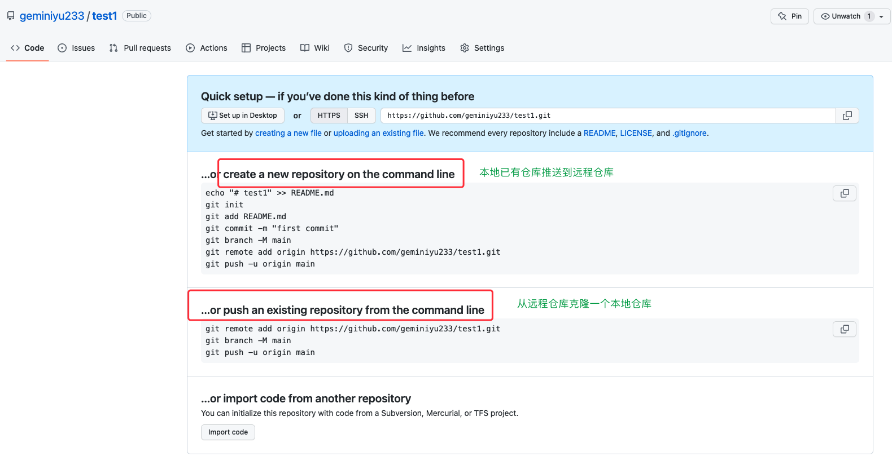
现在，我们根据 GitHub 的提示，在本地的test1仓库下运行命令：
1 | git remote add origin https://github.com/geminiyu233/test1.git |
添加后，远程库的名字就是 origin，这是 Git 默认的叫法，也可以改成别的，但是 origin 这个名字一看就知道是远程库。
下一步，就可以把本地库的所有内容推送到远程库上：
1 | $ git push -u origin master |
把本地库的内容推送到远程，用 git push 命令，实际上是把当前分支 master 推送到远程。
由于远程库是空的，我们第一次推送 master 分支时，加上了-u参数，Git 不但会把本地的 master 分支内容推送的远程新的master分支，还会把本地的 master 分支和远程的 master 分支关联起来，在以后的推送或者拉取时就可以简化命令git push。
推送成功后，可以立刻在GitHub页面中看到远程库的内容已经和本地一模一样：
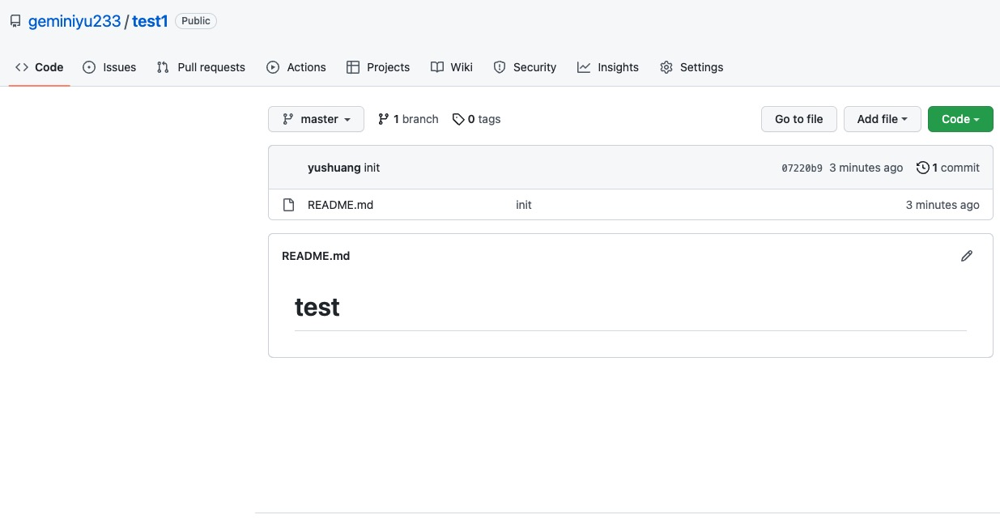
2.3 从远程库克隆
上面我们讲了先有本地库，后有远程库的时候，如何关联远程库。
现在，假设我们从远程库克隆。直接使用命令git clone克隆一个本地库：
1 | $ git remote add origin https://github.com/geminiyu233/test1.git |
2.4 设置换行符
Windows 使用回车和换行两个字符来结束一行，而 Mac 和 Linux 只使用换行一个字符。Windows 系统可以在提交代码前输入命令：
1 | git config --global core.autocrlf false |
Windows 系统如果不设置换行符的话，项目代码拉取运行后可能会报下面的错误：
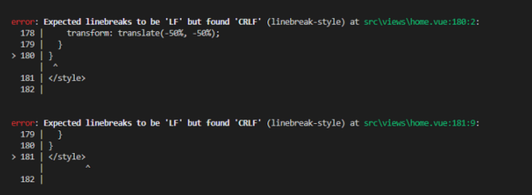
3 时光穿梭机
我们已经成功地添加并提交了一个 README.md 文件，我们继续修改 README.md 文件
现在，运行git status命令看看结果：
1 | $ git status |
git status命令可以让我们时刻掌握仓库当前的状态，上面的命令输出告诉我们，README.md被修改过了，但还没有准备提交的修改。
虽然Git告诉我们README.md被修改了，但如果能看看具体修改了什么内容，自然是很好的。比如你休假两周从国外回来，第一天上班时，已经记不清上次怎么修改的README.md，所以，需要用git diff这个命令看看：
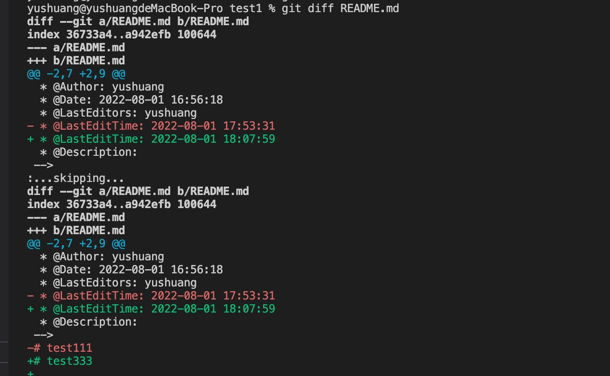
3.1 工作区和暂存区
在讲下面内容前，我们先了解概念工作区和暂存区
- 工作区（Working Directory）
就是你在电脑里能看到的目录，比如我的test1文件夹就是一个工作区：
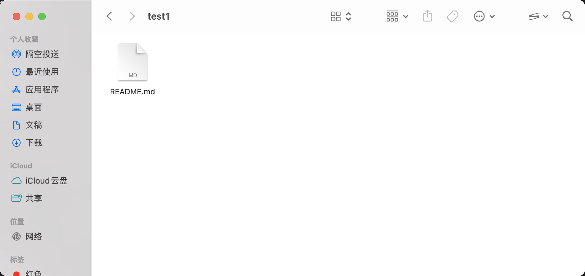
- 版本库（Repository）
工作区有一个隐藏目录.git，这个不算工作区，而是Git的版本库。
Git的版本库里存了很多东西，其中最重要的就是称为 stage（或者叫index）的暂存区，还有 Git 为我们自动创建的第一个分支 master，以及指向 master 的一个指针叫HEAD。

3.2 版本回退
在我们反复不断对一个文件进行了修改，然后不断对提交修改到版本库中，现在我们来回顾下我们 README.md 文件一共有几个版本被提交到 Git 仓库中了：
版本1：
1 | 我是女 |
版本2：
1 | 我是女生 |
版本3：
1 | 我是漂亮女生 |
当然了，在实际工作中，我们脑子里怎么可能记得一个几千行的文件每次都改了什么内容，不然要版本控制系统干什么。版本控制系统肯定有某个命令可以告诉我们历史记录，在 Git 中，我们用git log命令查看：
1 | $ git log |
git log命令显示从最近到最远的提交日志，我们可以看到3次提交
如果嫌输出信息太多，看得眼花缭乱的，可以试试加上--pretty=oneline参数：
1 | $ git log --pretty=oneline |
好了，现在我们启动时光穿梭机，准备把README.md回退到上一个版本，也就是我们要把当前版本我是贼漂亮女生回退到上一个版本我是漂亮女生，就可以使用git reset命令：
1 | $ git reset --hard HEAD^ |
还可以继续回退到上一个版本，不过且慢，让我们用git log再看看现在版本库的状态：
1 | $ git log --pretty=oneline |
最新的那个版本我是贼漂亮女生已经看不到了！好比你从21世纪坐时光穿梭机来到了19世纪，想再回去已经回不去了，肿么办？
办法其实还是有的，只要上面的命令行窗口还没有被关掉，你就可以顺着往上找啊找啊，找到那个我是贼漂亮女生的commit id是2678160...，于是就可以指定回到未来的某个版本：
1 | $ git reset --hard 2678160 |
Git 的版本回退速度非常快，因为 Git 在内部有个指向当前版本的HEAD指针，当你回退版本的时候，Git仅仅是把HEAD指向我是贼漂亮女生：
然后顺便把工作区的文件更新了。所以你让HEAD指向哪个版本号，你就把当前版本定位在哪。
版本号没必要写全，前几位就可以了，Git 会自动去找。当然也不能只写前一两位，因为 Git 可能会找到多个版本号，就无法确定是哪一个了。
现在，你回退到了某个版本，关掉了电脑，第二天早上就后悔了，想恢复到新版本怎么办？找不到新版本的 commit id 怎么办？
在 Git 中，总是有后悔药可以吃的。当你用$ git reset --hard HEAD^回退到我是漂亮女生版本时，再想恢复到我是贼漂亮女生，就必须找到我是贼漂亮女生的commit id。Git提供了一个命令git reflog用来记录你的每一次命令：
1 | $ git reflog |
终于舒了口气，从输出可知，我是贼漂亮女生的commit id是2678160，现在，你又可以乘坐时光机回到未来了。
3.3 撤销修改
- 假设你正在开发一个功能，在你准备提交前，突然想起某段代码写错了，这个时候你可以删除最后一行，手动恢复到上一个版本状态。如果用
git status查看一下：
1 | $ git status |
你可以发现，Git会告诉你，git restore file可以丢弃工作区的修改：
1 | git restore README.md |
命令git restore README.md意思就是，把 README.md 文件在工作区的修改全部撤销，这里有两种情况：
一种是 README.md 自修改后还没有被放到暂存区，现在，撤销修改就回到和版本库一模一样的状态；
一种是 README.md 已经添加到暂存区后，又作了修改，现在，撤销修改就回到添加到暂存区后的状态。
总之，就是让这个文件回到最近一次git commit或git add时的状态。
- 假设你不但写了一些 bug，还
git add到暂存区了。庆幸的是，在commit之前，你发现了这个问题。用git status查看一下，修改只是添加到了暂存区，还没有提交：
1 | $ git status |
Git同样告诉我们，用命令git restore --staged <file>可以把暂存区的修改撤销掉（unstage），重新放回工作区：
1 | git restore --staged README.md |
再用git status查看一下，现在暂存区是干净的，工作区有修改：
1 | $ git status |
4 分支管理
假设你准备开发一个新功能，但是需要两周才能完成，第一周你写了50%的代码，如果立刻提交，由于代码还没写完，不完整的代码库会导致别人不能干活了。如果等代码全部写完再一次提交，又存在丢失每天进度的巨大风险。
现在有了分支，就不用怕了。你创建了一个属于你自己的分支，别人看不到，还继续在原来的分支上正常工作，而你在自己的分支上干活，想提交就提交，直到开发完毕后，再一次性合并到原来的分支上，这样，既安全，又不影响别人工作。
4.1 创建与合并分支
在版本回退里，你已经知道，每次提交，Git 都把它们串成一条时间线，这条时间线就是一个分支。截止到目前，只有一条时间线，在 Git 里，这个分支叫主分支，即 master 分支。HEAD严格来说不是指向提交，而是指向 master，master 才是指向提交的，所以，HEAD指向的就是当前分支。
一开始的时候，master 分支是一条线，Git 用 master 指向最新的提交，再用HEAD指向 master，就能确定当前分支，以及当前分支的提交点：

每次提交，master 分支都会向前移动一步，这样，随着你不断提交，master 分支的线也越来越长。
当我们创建新的分支，例如 dev 时，Git新建了一个指针（分支）叫 dev，指向 master 相同的提交，再把HEAD指向 dev，就表示当前分支在 dev 上：

Git 创建一个分支很快，因为除了增加一个 dev 指针，改改HEAD的指向，工作区的文件都没有任何变化！
不过，从现在开始，对工作区的修改和提交就是针对 dev 分支了，比如新提交一次后，dev 指针往前移动一步，而 master 指针不变：

假如我们在 dev 上的工作完成了，就可以把 dev 合并到 master 上。Git 怎么合并呢？最简单的方法，就是直接把 master 指向 dev 的当前提交，就完成了合并：

所以 Git 合并分支也很快！就改改指针，工作区内容也不变！
合并完分支后，甚至可以删除 dev 分支。删除 dev 分支就是把dev指针给删掉，删掉后，我们就剩下了一条master分支：

下面开始实战。
1 | $ git checkout -b dev |
git checkout命令加上-b参数表示创建并切换，相当于以下两条命令：
1 | $ git branch dev |
然后，用git branch命令查看当前分支：
1 | $ git branch |
git branch命令会列出所有分支，当前分支前面会标一个*号。
然后，我们就可以在 dev 分支上正常提交。现在，dev 分支的工作完成，我们就可以切换回 master 分支：
1 | $ git checkout master |
切换回master分支后，再查看一个 README.md 文件，刚才添加的内容不见了！因为那个提交是在 dev 分支上，而 master 分支此刻的提交点并没有变：

现在，我们把 dev 分支的工作成果合并到 master 分支上：
1 | $ git merge dev |
git merge命令用于合并指定分支到当前分支。合并后，再查看 README.md 的内容，就可以看到，和 dev 分支的最新提交是完全一样的。
合并完成后，就可以放心地删除 dev 分支了：
1 | $ git branch -d dev |
删除后，查看 branch，就只剩下 master 分支了：
1 | $ git branch |
4.2 解决冲突
合并分支往往也不是一帆风顺的，现在我们模拟一个冲突的情况：
准备新的feature1分支，在该分支上修改一行代码；然后git add，git commit
切换到master分支，在同一行修改代码；然后git add，git commit
现在，master分支和feature1分支各自都分别有新的提交，变成了这样：

这种情况下，Git 无法执行“快速合并”，只能试图把各自的修改合并起来，但这种合并就可能会有冲突，我们试试看：
1 | $ git merge dev |
果然冲突了！Git 告诉我们，README.md 文件存在冲突，必须手动解决冲突后再提交。git status也可以告诉我们冲突的文件：
1 | $ git status |
Git用<<<<<<<，=======，>>>>>>>标记出不同分支的内容，我们修改后保存，在你准备提交：
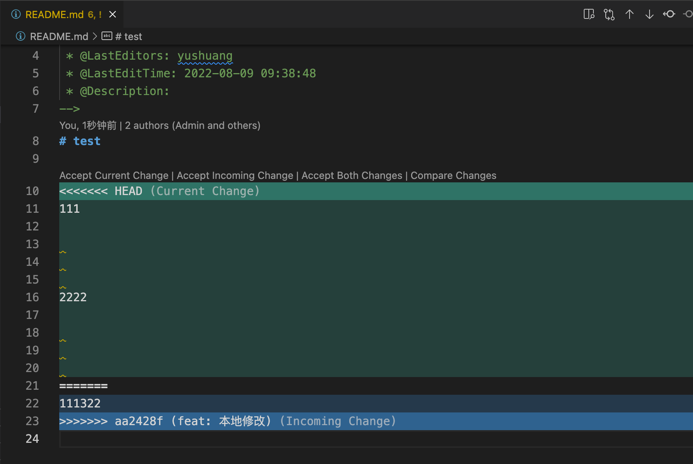
1 | $ git add readme.txt |
现在，master 分支和 feature1 分支变成了下图所示：

用带参数的git log也可以看到分支的合并情况：
1 | $ git log --graph --pretty=oneline --abbrev-commit |
4.2.1 避免产生冲突
本地拉取：
- 当远端有更新，本地库没有变化，拉取操作远端会覆盖本地库（远端版本高于本地）
- 当同一个文件同一行远端修改，本地也有修改，拉取会产生冲突文件（远端版本和本地版本冲突）
- 当本地修改，而远端没有变化，拉取不会产生变化（本地版本高于远端版本）
- 当本地库版本低于远端版本，则无法推送，必须先拉取再操作，否则git会提示报错
4.3 多人协作
多人协作时，大家都会往 master 和 dev 分支上推送各自的修改。
当你从远程库 clone 时，默认情况下，你只能看到本地的 master 分支。不信可以用git branch命令看看：
1 | $ git branch |
现在，你要在 dev 分支上开发，就必须创建远程 origin 的 dev 分支到本地，于是用这个命令创建本地 dev 分支：
1 | git checkout -b dev origin/dev |
现在，他就可以在 dev 上继续修改，然后，时不时地把 dev 分支 push 到远程：
1 | $ git add env.txt |
你的小伙伴已经向origin/dev分支推送了他的提交，而碰巧你也对同样的文件作了修改，并试图推送：
1 | $ git push origin dev |
推送失败，因为你的小伙伴的最新提交和你试图推送的提交有冲突，解决办法也很简单，Git 已经提示我们，先用git pull把最新的提交从origin/dev抓下来，然后，在本地合并，解决冲突，再推送：
1 | $ git pull |
git pull也失败了，原因是没有指定本地 dev 分支与远程origin/dev分支的链接，根据提示，设置 dev 和origin/dev的链接：
1 | $ git branch --set-upstream-to=origin/dev dev |
再pull：
1 | $ git pull |
这回git pull成功，但是合并有冲突，需要手动解决，解决的方法和分支管理中的解决冲突完全一样。解决后，提交，再 push：
1 | $ git commit -m "fix env conflict" |
4.4 强迫症-变基 Rebase
4.4.1 原理
现在两个分支master和feature，其中feature是在提交点B处从master上拉出的分支
master上有一个新提交M，feature上有两个新提交C和D

现在要把master合并到feature分支上：
咱们正常直接git merge master，运行结果如下，可以看到有分叉
1 | * 1434cad (HEAD -> feature) feat: 合并master |
如果我们采用变基到方式呢？
此时切换到feature分支上，执行如下命令，相当于是想要把master分支合并到feature分支（这一步的场景就可以类比为我们在自己的分支feature上开发了一段时间了，准备从主干master上拉一下最新改动）
1 | $ git checkout feature |
以上是刚我举的简单例子，但是实际开发项目那日志就多了，利用变基，就可以把
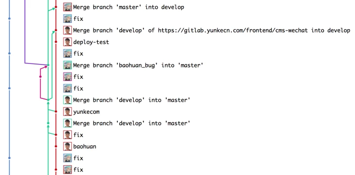
变成这样，强迫症看着是不是舒服多了，并且也有利于我们利用工具一键生成项目更新日志：
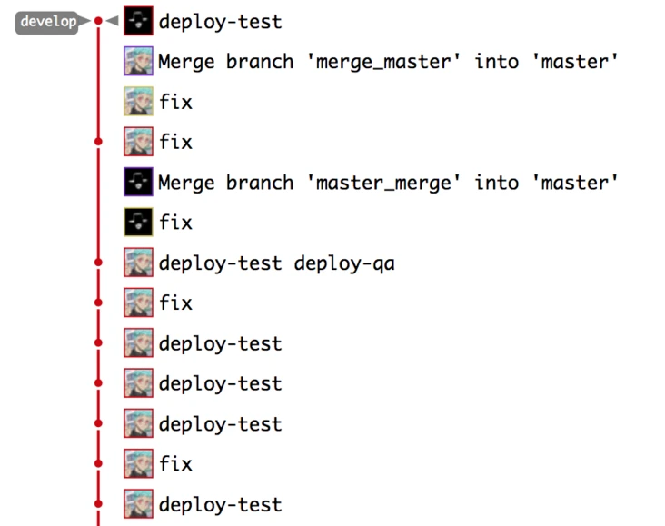
下图为变基后的提交节点图，解释一下其工作原理：
rebase，变基，可以直接理解为改变基底。feature分支是基于master分支的B拉出来的分支，feature的基底是B。而master在B之后有新的提交，就相当于此时要用master上新的提交来作为feature分支的新基底。实际操作为把B之后feature的提交存下来，然后删掉原来这些提交，再找到master的最新提交位置，把存下来的提交再接上去（新节点新commit id），如此feature分支的基底就相当于变成了M而不是原来的B了。（注意，如果master上在B以后没有新提交，那么就还是用原来的B作为基，rebase操作相当于无效，此时和git merge就基本没区别了，差异只在于git merge会多一条记录Merge操作的提交记录）
上面的例子可抽象为如下实际工作场景：张三从B拉了代码进行开发，目前提交了两次，开发到D了；李四也从B拉出来开发了并且开发完毕，他提交到了M，然后合到主干上了。此时张三想拉下最新代码，于是他在feature分支上执行了git rebase master，即把master分支给rebase过来，由于李四更早开发完并合了主干，如此就相当于张三是基于李四的最新提交M进行的开发了。
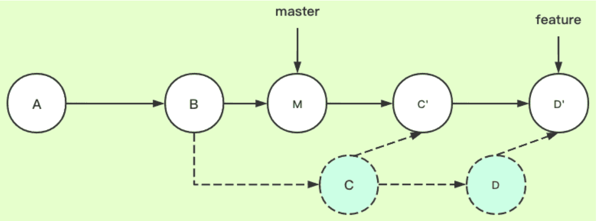
4.4.2 常用使用场景
4.4.2.1 场景1
在开发一个功能时，可能需要几天，每天都提交了更改，最后完成整个功能，但是我们的提交记录中有多个版本，如V1，V2，V3 和 V4 版本，为了提交记录简洁，可以通过变基，将多个提交记录整合成一个记录，如下图：
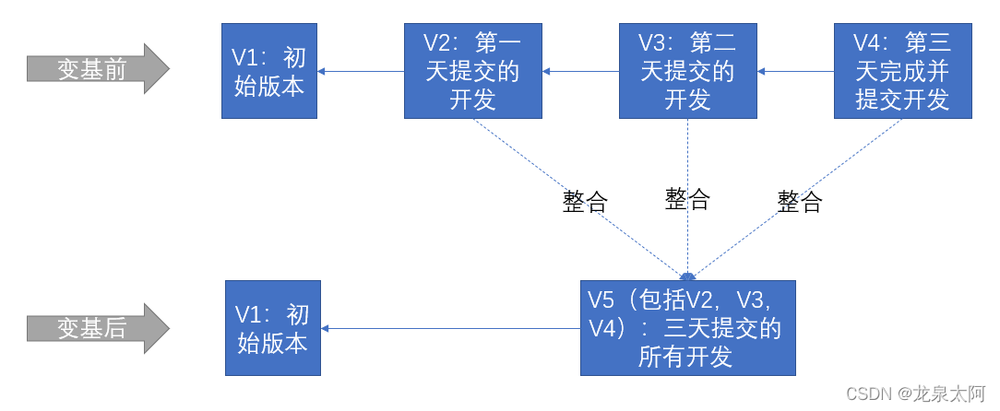
4.4.2.2 场景2
当分支dev开发并提交了新功能V3，主分支master上也提交了新的功能，我们要把dev分支合并到master分支，正常情况下，我们的最终分支结构如下图：
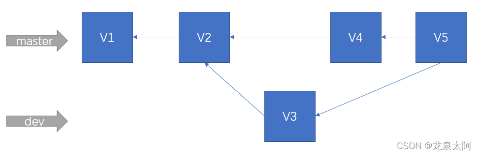
这种merge结构是没问题的，也是常用的，但假如，我们想要提交记录更加简洁，即像下图这种结果，我们可以采用rebase变基方式合并。
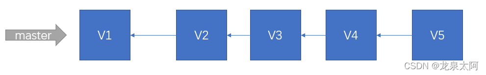
4.4.2.2 场景3（处理rebase时的冲突）
有时，在执行rebase时会产生冲突，接下来就要先解决冲突，解决完冲突后执行git add命令，在接着执行git rebase --continue命令
4.4.3 全局设置
一般初学者总会感到茫然，不敢轻易下手，怕万一把时间线弄坏了，一发不可收拾。而且所有关于变基的命令都和我们已经多年习惯了的pull/add/commit/push不一样，手工输入，繁琐而且容易出错。所以我们今天不讲太多的rebase命令怎么用，而直接用两条命令设置一下，从此以后让你每次提交都可以自动变基，而不必改变之前的任何操作习惯。这两条命令就是：
1 | git config --global pull.rebase true |
这两条命令在任意一台电脑上都只需要设置一次，而且一次设置，全局生效，所有的项目以后每次pull/push都会自动变基，再也不用担心在提交之前忘记变基了。
4.5 使用 git stash 解决问题
场景1：当你正在开发一个功能 A 时，刚开发到一半突然接到需要在一小时内修复一个 bug，但是功能 A 的工作预计还要一天才能开发完，当时在 dev 分支开发的一部分功能 A 功能也还没有提交，并不是你不想提交，而是工作只进行到一半，还没法提交，但是又必须在 1 小时内修复 bug 该怎么办？
这个时候就可以用到 Git 提供的 stash 功能了：
先把当前工作现场“储藏”起来（相当于还原到和服务器上一样的代码，当前工作区是干净状态）。
1 | $ git stash |
现在，用 git status 查看工作区，git 显示工作区是干净的，现在可以放心的修改 bug 了。
现在 bug 修复完成，然后提交。
1 | $ git add readme.txt |
bug 修复后，提交代码后使用git status发现当前工作区是干净的，刚才的工作现场存到哪去了？用git stash list命令看看
1 | git stash list |
是时候把存储起来的功能 A 代码恢复回来继续工作了，有两种恢复方式。
- 一是用
git stash apply恢复，但是恢复后，stash 内容并不删除，你需要用git stash drop来删除。 - 用
git stash pop，恢复的同时把 stash 内容也删了
1 | git stash pop |
再用git stash list查看，就看不到任何 stash 内容了：
你可以多次 stash，恢复的时候，先用 git stash list 查看，然后恢复指定的 stash，用命令：
1 | git stash apply <stash的索引值> |
删除保存的 stash：
1 | git stash drop |
场景 2：当你往远程仓库 push 代码时，本地版本 < 远程版本时，并且你本地还有未 add 的代码时，Git 就会提示你 The current working tree is not clean。
这个时候你也可以先把本地为提交的代码使用 stash 功能给存储起来，把代码 push 到远程后再使用 git stash pop 或 git stash apply 把存储的代码给恢复。
场景 3：平常我们新开发一个功能要建个分支，修改个 bug 也要建个分支，我们经常要对不同分支进行操作，然而原本我是想在 feature 分支开发一个新功能，但是代码却写在了 test 分支上了。
- 在 test 分支上执行 git stash，先把代码存储起来。
1 | git stash |
- 执行 git switch feature 切换到 feature 分支。
1 | git switch feature |
- 执行 git stash pop 把存储的代码释放出来，并清空 stash 存储的代码。
1 | git stash pop |